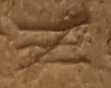

Ξ - type2.2
Script
Greek
Grapheme
Ξ
Variant
type2.2
Characteristic form:
bottom-bar is on baseline
downstroke is diagonal
downstroke is straight
middle-bar is horizontal
top-bar is horizontal
Exemplar:

Examples